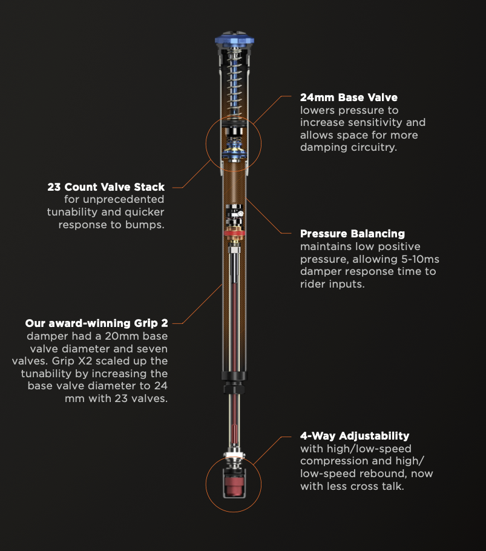

Fox ha aggiornato la sua gamma di sospensioni per il 2025 concentrandosi su piccoli miglioramenti che, combinati, cercano di alzare il livello di controllo e sensibilità. Le novità principali riguardano in particolare le Fox 38 (modelli da enduro/aggressive trail) e la Fox 36 (all-mountain), con affinamenti su idrauliche e opzioni di tuning.
Per un endurista le modifiche non sono rivoluzionarie ma sono pratiche: più controllo in ingresso curva e meno affondamento nelle compressioni ripetute. In sostanza, la forcella vuole dare più confidenza quando si spinge forte su sezioni consecutive e si frena molto.
Se hai già una Fox recente (ultimi 3 anni) e non senti limiti grossi, il salto non è obbligatorio. Se però fai gare o cerchi ogni margine di performance (meno fading, settaggi più fini), l'aggiornamento alla versione 2025 o una revisione con cartuccia aggiornata vale la pena.
Prima di cambiare forcella o cartuccia, prova a lavorare su: pressione aria (se prevista), olio e controllo della progressività con spacers. A volte basta poco per ottenere un comportamento molto più vicino a quello promesso dalle specifiche 2025.
← Torna alle curiosità